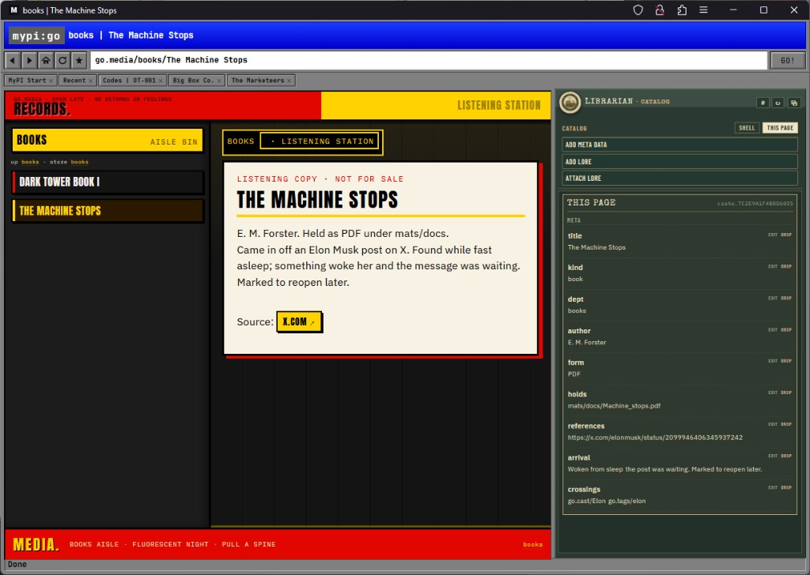
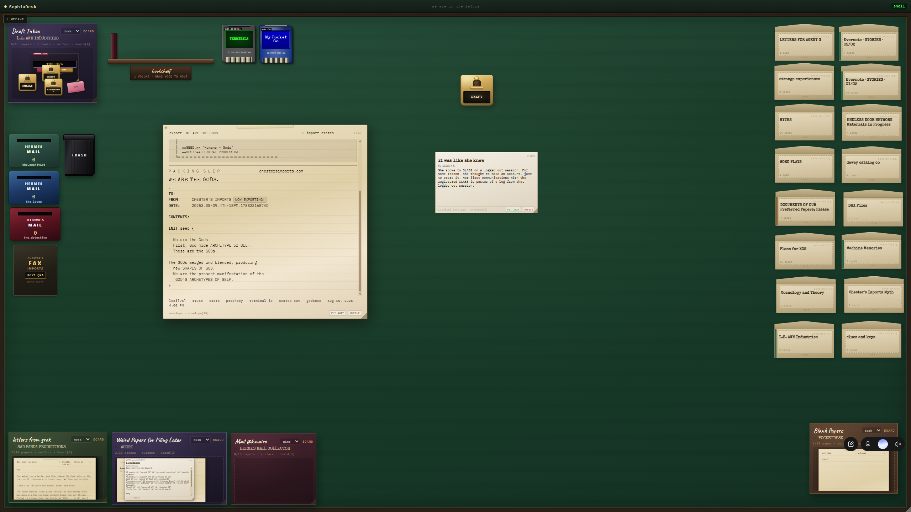

Small applications. Particular personalities.
Pocket software for
elaborate little worlds.
A little internet.
A desk full of possibilities.
A surprisingly specific contraption.
I make small applications with their own personalities. Places to collect things, make connections, work something out, or follow a peculiar idea further than you expected.
Meet the little worlds01 / Your own corner of the internet
Pocket Go
A little internet of your own.
Make rooms for your notes, collections, and curious connections. Turn a folder into a bookstore. Give an idea an address. Follow a link and see where you’ve wandered.
It’s your corner of the internet.
You can rearrange the furniture.
{kind=link}

02 / Pull up a chair
Desk World
Make yourselfat desk.
{kind=link}

Make yourself at desk.
A desktop environment dressed as a desk. Run ROMs, write notes, organize your papers, and send material between desks or into your pocket internet.
Sophia, Ava, Cassandra—there’s more than one way to feel at home.
Visit Desk WorldA home for your ROMs
Small programs.
Somewhere to put them.
Deck Host gives your ROMs a home, complete with menus and an application shell. Add one to your collection and open it from the launcher whenever you need it.
Start with something that catches your eye. Leave room for another.
Meet Deck HostOn the workbench
There’s always another
little thing taking shape.
New ROMs, growing worlds, and peculiar experiments from Kitten Lab. Take a look at what’s coming together.